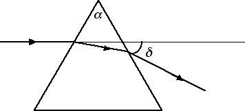
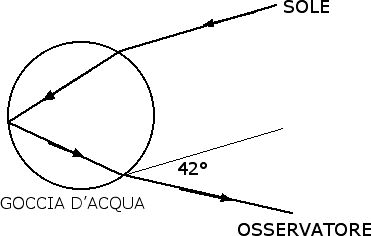

Rifrazione e lenti
Velocità e dispersione della luce
In questa sezione andremo a studiare la relazione tra l'indice di rifrazione assoluto e la velocità e la dispersione della luce. La velocità della luce nel vuoto è c = 300 000 km / s. Questa è la massima velocità esistente in natura e venne misurata per la prima volta con una certa precisione da Fizeau e Foucault nel XIX secolo.
Potremmo chiederci: quanto vale la velocità della luce in un mezzo, ad esempio nell'acqua o nel vetro? Si scopre che in un mezzo la velocità v della luce è inferiore rispetto alla velocità c della luce nel vuoto. La relazione tra queste due velocità coinvolge l'indice di rifrazione n del mezzo secondo la seguente relazione: v = c / n. Cominciamo con il considerare l'aria. Abbiamo visto che l'indice di rifrazione dell'aria è uguale a 1.0003. Pertanto possiamo dire che la velocità della luce nell'aria coincide praticamente con la velocità della luce nel vuoto. Nell'acqua (n = 1.33) avremo invece che la luce si propaga a
v = c / n = 300 000 / 1.33 km / s = 225 000 km / s.
Nel vetro crown (n = 1.52) la velocità di propagazione dei raggi luminosi è ancora più piccola: 197 000 km / s.
Un altro fenomeno fisico importante nel quale entra l'indice di rifrazione è la cosiddetta dispersione della luce. Vediamo in che cosa consiste questo fenomeno. Cominciamo con il considerare un prisma di vetro (n = 1.52) e apertura angolare pari ad α. Mandiamo un raggio di luce su questo prisma e vediamo come viene deviato il raggio luminoso. Evidentemente il raggio di luce viene rifratto due volte: una prima volta passando dall'aria al vetro e una seconda volta passando dal vetro all'aria:

Indichiamo con δ l'angolo di deviazione, ossia l'angolo totale di cui viene deviato il raggio luminoso che entra nel prisma. Per angoli α < 15° vale la seguente relazione: δ = α · (n - 1). Se ora ripetiamo lo stesso esperimento usando raggi laser di colori diversi scopriamo che l'angolo di deviazione dipende dal tipo di colore che viene inviato sul prisma. In particolare, l'angolo di deviazione del violetto è maggiore rispetto all'angolo di deviazione del rosso. Questo implica che l'indice di rifrazione del vetro dipende dal tipo di colore. In particolare nel caso del vetro crown abbiamo i risultati riportati nella seguente tabella:
| Colore | Violetto | Blu | Verde | Giallo | Arancio | Rosso |
| n | 1.5335 | 1.5232 | 1.5203 | 1.5171 | 1.5146 | 1.5140 |
Questo è il motivo per cui, se mandiamo della luce solare a incidere su un prisma di vetro, le singole componenti cromatiche subiscono deviazioni diverse e riusciamo a scomporre la luce nei singoli colori. Un fenomeno simile avviene nell'arcobaleno. Anche l'arcobaleno può essere giustificato con le leggi dell'ottica geometrica. I due ingredienti fondamentali per la creazione di un arcobaleno sono il sole e l'acqua. Nella seguente figura vediamo quello che succede quando un raggio di luce proveniente dal sole incontra una goccia d'acqua:

Passando dall'aria alla goccia d'acqua il raggio di luce viene rifratto, poi viene riflesso all'interno della goccia d'acqua e di nuovo viene rifratto nel passaggio dalla goccia d'acqua all'aria. L'angolo di deviazione totale subito dai raggi luminosi è pari a circa 42°. Dal momento che, come nel caso del prisma di vetro, la deviazione subita dalla luce dipende dalla componente cromatica della luce, la luce che arriva all'osservatore risulta scomposta nei singoli colori. Dalla figura notiamo anche come, per poter osservare un arcobaleno, è necessario mettersi con il sole alle spalle.